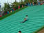
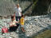
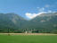
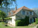

2002年9月22日 15時08分撮影
芝すべり・・・・・滑り降りるのはとっても気持ち良いんだけど、
ソリと由起子の手を引いて階段を登るのはしんどかったそうです2002年9月22日 13時07分撮影
ハイツ１０周年を記念してみんなで出かけた「堺ハーベストの丘」
由起子はポニーに乗りました。楽しかったね。。。
2002年9月16日 10時33分撮影
チェックアウト後、ホテルの前の川原で、、、川に足をつけたり
川に石を投げたり、お魚に話しかけたり・・・楽しいひととき。。。2002年9月15日 18時16分撮影
宿泊先の「ホテル かみきた」での夕食タイム。大満足!!2002年9月15日 11時36分撮影
敬老の日なので、パパ方のおじいちゃん・おばあちゃんを吉野
の温泉にご招待。ここは途中に立ち寄った「熊野本宮大社」2002年8月16日 11時31分撮影
出発の朝。。。夢のような１週間でした。
楽しかったね。。。いっぱい思い出ができましたね。。。
2002年8月16日 11時22分撮影
山が綺麗。景色が綺麗。空気が綺麗。
夜の星空は天の川までが見えると言うなんとも贅沢な毎日。
2002年8月16日 10時59分撮影
リヨンから電車に揺られ1時間半、グルノーブル下車、車に乗って
１時間でコーディアック着。大自然の真ん中に建つ別荘です。2002年8月15日 15時49分撮影
時間があれば、広い芝生のお庭では球技がはじまります。
クリケット、サッカー、ペタンク・・・・。とても環境が良いです。2002年8月15日 13時06分撮影
年齢が近いせいかティボーはよく由起子の相手をして
遊んでくれました。やさしいお兄ちゃんです。＊フランス旅行の写真は、No．314からスタートです。。。前ページに戻って見て下さいね＊